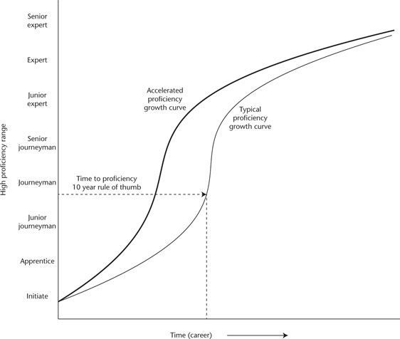
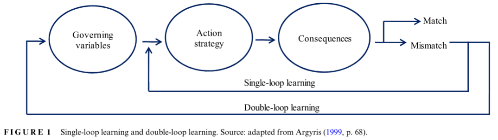

author: niplav, created: 2024-02-28, modified: 2024-10-30, language: english, status: on hold, importance: 6, confidence: possible
I examine the literature on transfer learning in humans. Far transfer is difficult to achieve, best candidate interventions are to practice at the edge of one's ability and make many mistakes, evaluate mistakes after one has made them, learn from training programs modeled after expert tacit knowledge, and talk about on one's strategies when practicing the domain.
When learning, one would like to progress faster, and learn things faster. So it makes sense to search for interventions that speed up learning (effective learning techniques), enable using knowledge and knowledge patterns from one learned domain in a new domain if appropriate (transfer learning), and make it easier to find further learning-accelerating techniques (meta-learning).
I've spent ~20 hours reading and skimming papers and parts of books from different fields, and extracting the results from them. Resulting spreadsheet here, google doc with notes here.
I've looked at 50 papers, skimmed 20 and read 10 papers and 20% of a book. In this text I've included all sufficiently-different interventions I've found that have been tested empirically.
For interventions tried by scientists I'd classify them into (ordered by how relevant and effective I think they are):
Additionally, most of the research is on subjects which are probably not intrinsically motivated to apply a technique well (i.e. high school students, military trainees, and university students), so there is a bunch of selection pressure on techniques which still work with demotivated subjects. I expect that many techniques work much better with already motivated subjects, especially ones that are easy to Goodhart.
In general, the tension I was observing is that industry and the military are the ones who perform well/do non-fake things, but academia are the ones who actually measure and report those measures to the public.
From when I've talked with people from industry, they don't seem at all interested in tracking per-employee performance (e.g. Google isn't running RCTs on their engineers to increase their coding performance, and estimates for how long projects will take are not tracked & scored). I also haven't seen many studies quantifying the individual performance of employees, especially high-earning white collar knowledge-workers.
If you think that these recommendations are kind of unsatisfying, I agree with you.
Given a broad set of skills , I was looking for an intervention/a set of interventions which has the following properties:
Research on transfer learning in humans isn't clearly differentiated from the research into effective learning techniques. Transfer learning and meta-learning are more focused on crossing the theory-practice gap and making progress in domains where we don't yet have detailed knowledge.
Therefore, I tried to find more information from well-performing institutions such as the military and large corporations, de-emphasizing research done in universities and schools (I found this difficult because universities tend to have more incentive to publish their techniques, and also strive to quantify their benefits).
I found several studies from psychology, especially educational psychology.
Dunlosky et al. 2017 is the best review of the evidence effective learning techniques I've found. It examines ten candidate interventions, and singles out two interventions as having high utility and two interventions as having moderate utility for tasks similar to learning material in a school-context, e.g. basic biology, basic economics, simple procedure-based mathematics &c.
The techniques classified as low utility are: summarization of some learned material, highlighting, using keywords/mnemonics, creating imagery for textual material while learning, and re-reading. I'm not surprised at all that highlighting and re-reading aren't effective in a school context. I'm also a little bit surprised that keywords and mnemonics don't work (since they are used very often by competitive mnemonists), as well as for mental imagery, since professional mathematicians so often use visualizations.
I'm moderately intrigued by their finding that summarization doesn't work, since I've heard from several acquaintances that it's good practice, but I think this is because it's very easy to cargo-cult and just paraphrase the previous material.
Summary: Far transfer occurs if one puts in a lot of effort, e.g. after doing semester- or year-long courses on decision-making and such. The effect sizes on general abilities tests are medium (d≈0.3).
Far transfer is:
improved performance at problems that are similar to but also substantially different from ones experienced during training (e.g., fault diagnosis in process control to fault diagnosis in telecommunication networks).
—Hoffman et al., “Accelerated Expertise”, 2014
One obvious intervention is to have a class in which one person tells other people about how to do good decisions, make tradeoffs, reason about statistical quantities, think spatially and improve mental imagery.
These kinds of interventions have been tried in schools, and they are generally a little bit more effective than I would've expected, yielding medium effect sizes. However, most of the relevant papers that show those medium effect sizes are from the dark period in psychology. I think they look okay6, but would want to look into them a bit more before making strong conclusions.
The relevant papers are:
It sometimes happens that training at one domain then reduces performance at another domain. A common example is learning to drive on the right side of the road and then having to drive on the left side.
This doesn't seem to appear very often, but is still interesting from a no-free lunch perspective.
Summary: If it is obvious that an error has occurred, and errors are affordable, then making errors during training transfers the learned knowledge surprisingly well (d=0.8).
Error Management Training (EMT) is a type of training in which making errors during exploration while learning is actively encouraged. Trainers encourage learners to make errors and reflect on those errors while learning, but don't give much guidance beyond that.
Keith & Frese 2008 perform a meta-analysis analysing studies training participants to use software tools or learn programming languages (n=2183), comparing EMT to training that encourages error-avoidance, and find that EMT has a medium-sized advantage over error-avoiding training methods (d=0.44).
EMT shows larger effect sizes over error-avoiding methods with more demanding transfer: d=0.56 for performance after training, and d=0.8 for transfer that requires modifying learned procedures to fit new contexts (adaptive transfer). This advantage only occurs if there is clear feedback on whether an error has occurred or not.
One is reminded of Umeshisms: If you never fail, you're underperforming.
Anecdotally, when I've tried tutoring someone in programming for fun, I tried to give the person assignments that they would only be able to solve 50% of the time. I don't know whether this is always optimal, but being wrong 50% of the time maximizes the entropy of the reward signal, and combats the problem of sparse rewards.
Summary: Evidence is pretty scant, but one paper shows suspiciously large effects. Worth investigating for a little bit, especially since it's often recommended by research mathematicians.
Another interesting-looking strand of research were tests of the Pólya method. The Pólya method is a four-step problem-solving method, with the four steps being
This is a variant of the OODA loop, with the difference that a lessened time pressure allows forming a whole plan (not just a decision) and for reflection after carrying out the plan.
The relevant papers all test on learning basic mathematical problem solving skills in plane geometry and fractions, and their results
For some weird reason, the only scientists who have investigated the Pólya method experimentally are Indonesian. I have no idea why.
Summary: With a lot of institutional support, one can extract knowledge from experts and use it to create better training programs. This requires a large institution to be worth it, but straightforwardly works at achieving its goals.
Accelerated Expertise (Hoffman et al., 2014) was motivated by getting military recruits up to speed quickly before moving them to deployment. It focuses on the case in which there are already experts for a given domain, and one aims to move the skills from domain experts into the mind of new recruits as quickly as possible. They are skeptical that any training can make trainees much better at the domain than experts with a lot of experience.
Chin 2024 summarizes the goals of the research project that lead to the book as attempting to speed up the time from being a beginner at a specific task or set of tasks to being proficient at that task (hence the name "Accelerated Expertise").

For this, Hoffman et al. have developed a series of multiple steps for creating training programs for new recruits.
The book contains a literature review on transfer in chapter 5 which afaik is the best collected resource on transfer learning in humans. They summarize the chapter by remarking that not artificially "dumbing down" a domain when a beginner tries to learn it can delay learning in the beginning, but speed up learning in the long run because it prevents misunderstandings from becoming entrenched.
Epistemic Effort: Read 20% of Accelerated Expertise, and skim-read several blogposts based on the book.
Hoffman et al. also summarize the methods for inducing transfer:
Transferring a skill to new situations is often difficult but can be promoted by following a number of training principles: employing deliberate practice, increasing the variability of practice, adding sources of contextual interference, using a mixed practice schedule, distributing practice in time, and providing process and outcome feedback in an explicit analysis of errors.
—Hoffman et al., “Accelerated Expertise” p. 176, 2014
I'd also have liked to dive deeper on extracting expert knowledge, which looks important especially in novel domains like AI alignment.
Summary: Increases working memory, but probably not IQ.
I re-read parts of Gwern 2019 and Gwern 2018, and come away with believing that if one is bottlenecked by working memory, n-back is worth it, but it doesn't work well for increasing intelligence. Replication status is mixed.
Summary: I didn't find anything on whether learned forecasting ability transfers across domains. The best paper I could find didn't look related at all.
The evidence from the judgmental forecasting research is confusing. On the one hand, it's widely known that domain-level experts are not very good at making predictions about their own domain, and are outcompeted by superforecasters who are just generally good at predicting.
On the other hand, the vibe given by forecasters and forecasting researchers leads to statements like this one:
By the way, there are no shortcuts. Bridge players may develop well-calibrated judgment when it comes to bidding on tricks, but research shows that judgment calibrated in one context transfers poorly, if at all, to another. So if you were thinking of becoming a better political or business forecaster by playing bridge, forget it.
—Philip E. Tetlock & Dan Gardner, “Superforecasting” p. 179, 2015
I tried to find the research this paragraph is talking about by asking in a couple of discord servers and messaging the Forecasting Research Institute, but the response I got referred directly to the bridge finding, which I wouldn't have to expected to work anyway.
I now want to analyze my own judgmental forecasting datasets to figure out how much forecasting ability generalizes across (forecasting) domains.
Summary: Organizations can become organizations that improve their governing variables. Inducing this is very tricky. Events that can induce double-loop learning in an organization include a change to leaders which value reflection and dialogue, and the introduction of software tools, such as systems which are used for prediction, which then provide feedback.
Double-loop learning is a method to improve learning of organizations, taking into account the learning process itself.

Auqui-Caceres & Furlan 2023 review the evidence on double-loop learning.
They report on several interventions:
[…] these studies maintain that the most prominent barrier to generate DLL is defensive reasoning and routines (Bochman & Kroth, 2010; Clarke, 2006; Kwon & Nicolaides, 2017; Sisaye & Birnberg, 2010; Stavropoulou et al., 2015; Sterman, 1994; Wong, 2005), which are produced by participants in DLL processes, whenever assumptions underlying taken-for-granted procedures, practices, or policies are challenged. Although people are aware that they should not use defensive reasoning to deal with daily work difficulties and challenges (Thornhill & Amit, 2003), they still use them to avoid losing control and dealing with embarrassment (Mordaunt, 2006).
—Auqui-Caceres & Furlan, “Revitalizing double-loop learning in organizational contexts: A systematic review and research agenda” p. 14, 2023
One thing I'd like to get clear on is the type I imagine a good intervention for increasing transfer would have.
This review was written after Raemon comissioned me to research transfer learning in humans, in the context of his new project on feedback-loop-first rationality.
After spending a dozen hours researching this area, my current impression is that this is something that too many different fields are interested in; among them are business people, military psychologists, education researchers, neuroscientists, cognitive psychologists…
This results in a wild outgrowth of terminology: "transfer of learning", "learning to learn", "deutero-learning", "double-loop learning", "design thinking", "adaptive learning" &c. In my research I don't think I've encountered a paper being cited by two different papers, which suggests there's more than a thousand papers grasping at the same question of transfer learning.
The importance scores are purely subjective. ↩
Since everything is judgmental-forecasting-shaped, one could test this by letting forecasters elaborate on their forecasts and at resolution time analyse their elaborations. I've tried doing this but it fell off for other projects. ↩
The two techniques are treated separately in the paper, but as far as I can tell mostly for historical reasons. ↩
Judging from Dunlosky et al. 2017 the participants in the various studies were asked to verbally explain their reasoning. It's not said how writing the explanation instead of saying it compares. ↩
This is supported by the theory of transfer-appropriate processing, which puts an especially strong emphasis on the encoding and retrieval of learned information. As far as I understand, the recapitulation of basic knowledge in the context of more advanced knowledge allows for a more accurate re-encoding of the basic knowledge. This also tracks with my experience of learning mathematics: I've gotten more mileage out of understanding basic concepts deeply (e.g. how probabilities, logits and bits fit together), than understanding more advanced concepts shallowly. ↩
I have some quibbles about the randomization in Herrnstein et al. 1986 (which happens on a class-level and not on an individual level), and the way effect sizes are measured in Fong et al. 1986. ↩